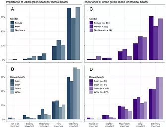
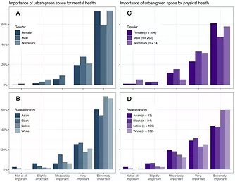

NYC Parks and Recs
Project: NYC Parks and Recs Role: UX/UI Designer Timeline: 3 months Concept Project
The Problem:
The COVID-19 pandemic last year had a chilling effect on New Yorkers. Unable to go to restaurants, museums, and other indoor spaces, many took advantage of the 2,300 parks within the city to get outdoors. Attendance at these locations reached new heights in 2020. With this influx of park-goers, the need to connect people to open spaces is prevalent. Like many government websites, nycgovparks.org; is packed with content that makes it cumbersome for users to navigate new parks or specific needs such as trails and BBQ designated areas. As the demand for parks increases, the need for usability increases as well.
Background
Hypothesis:
- - A mobile tool to connect people with parks and recreation facilities; within the city based on the user's needs and location.
- - Streamline content from nycgovparks.org to be user-friendly and direct.
- - Inform users of local events and activities happening in neighboring parks and facilities or throughout the city.
The Why:
The need for access to open spaces in a city like NYC has always been an issue due to its lack of available green spaces. With 2,300 parks within New York City, many New Yorkers and tourists are unaware that many of these parks exist. Since the pandemic, people's needs for outdoor activities have grown. These spaces are helping New Yorkers in a difficult time, from aiding user's mental health to connecting users with loved ones in a safe outdoor location.
Buisness Oppurtunties:
- - Increase of traffic to parks and recreational facilities.
- - Increase number of memberships to local recreational centers.
- - A quick reference point for park rules and access to permits.
- - Connecting with the communities that the parks are servicing.
- - Creating a social platform that users can share their outdoor experiences while promoting the park's beauties.
Research
Qualitative Data:
I Interviewed 10 participants at 2 different parks. Prospect Park and Herbert Von King Park and Brooklyn NY. Participants aged ranged from 18-37. Interviews were done on June 10th & 12th of 2021
Interview Questions:
- - How often do you use urban green spaces and how has that changed since the pandemic?
- - What activities do you do when using urban green spaces?
- - What are your 3 major issues regarding urban green spaces?
- - What can make your experiences better when finding an urban green space?
User Persona:


Secondary Research:
 

Through secondary quantitative data, I've retrieved a survey done on New Yorkers by The New School titled
Parks are Critical Urban Infrastructure: Perception and Use of Urban Green Spaces in NYC During COVID-19.
In total, 1372 people took the NYC survey, and 1145 people completed over 70% of the survey
questions used for this analysis. Of those, over 70% identified as female and 23% as male, with
~2% identifying as nonbinary. The survey was taken during the early months of the Covid-19 pandemic in New York
City (May 13 - June 15,
2020)
The data shows that the majority of the participants value green open spaces for mental health over physical
health.
Over 75 percent of the participants viewed places to walk such as trails, Tree shade and places to sit were
important features in an urban green space.
Insight
Pain Points:
- - The nycgovpark.org website is too cumbersome to navigate.
- - Limited open spaces that offer specific needs in my neighborhood.
- - Unclear park rules and how to get assistance.
- - Not familiar with New York City parks, besides the ones near their neighborhood.
- - Difficulty connecting with fellow park goers who share a common interest that would want to attend local park events.

Concept
Key Design:
- - Onboarding will allow the app to collect user's outdoor interests.
- - A tailored profile page that shows neighboring parks and activities happening around the user. As well as other parks throughout the city that matches the user's interests.
- - User-friendly search field to find a park or facility with a zip code or borough.
- - Not familiar with New York City parks, besides the ones near their neighborhood.
- - An integrated social platform that will allow users to share photos and event filers to connect with fellow park goers.


Deliverables
Onboarding:


Search:


Chat:


Testing:
I conducted a usability test on the onboarding process. I asked 3 participants to use the prototype for their insight on visual clarity and intuitiveness of the app.
Summary:
In conclusion through quantitative and qualitative research, I designed an app that targets park-goers who want to venture out and use more green space in their neighborhoods or throughout NYC. I designed key features that address both user and business needs.
- - Onboarding will allow NYC Parks to gather information on user's needs and interests to ensure better service. This also tailors the user's experience for better search results based on their interests.
- -Complete database of parks and facilities for user access. This ensures park promotion as well as a large database for users to explore..
- - An integrated social platform that allows users to share fliers for park gatherings or outdoor classes. This also provides a space for users to connect and meet fellow park goers who may share the same outdoor interests. This ensures user engagement on the platform and an increase in park activities.
Key Learnings:
- - From the usability testing users shared their concern about the sign-up contact field being too small and difficult to read.
- - One user suggested adding the ratings for the parks sooner so it can make it easier in making a decision on picking a park or facility.
- - Add a screen for zipcode on onboarding to ensure geotag accuracy.